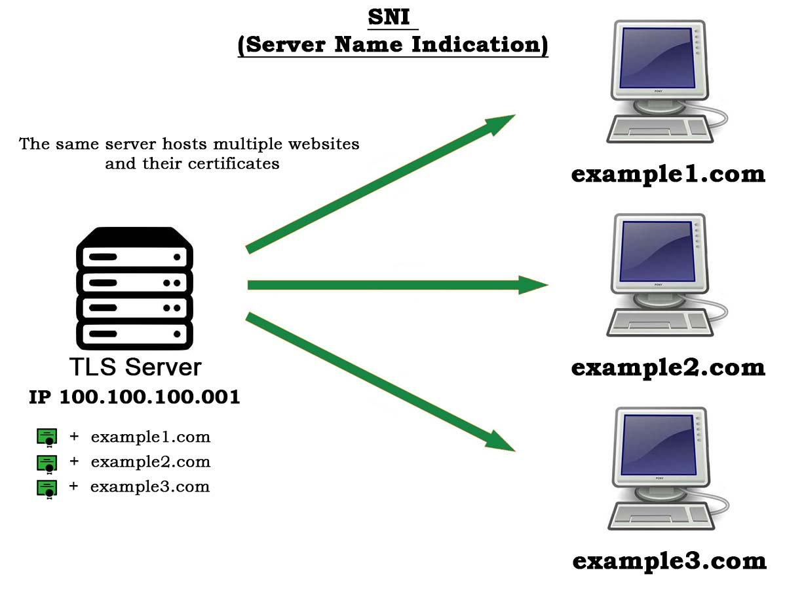

Updated ( 2020-06-21 )
MySite> Node.js> TLS (SSL)> SNI
- SNI is a TLS extension, it allows one server (under an IP address) to host multiple certificates along with their content

// all 3 domains 'testSite1.com' 'testSite2.com' 'testSite3.com' are routed to 172.0.0.1
// the server selects which certificate and content to present to the requesting client
// ------------------------------------------------------------------------------------
// SERVER -----------------------------------------------------------------------------
var tls = require('tls');
var fs = require('fs');
// 3 secureContext with 3 different certificates
var secCtx_1 = tls.createSecureContext({cert:fs.readFileSync('certs/testSite1Cer.cer'), key:fs.readFileSync('certs/testSite1Key.pem')});
var secCtx_2 = tls.createSecureContext({cert:fs.readFileSync('certs/testSite2Cer.cer'), key:fs.readFileSync('certs/testSite2Key.pem')});
var secCtx_2 = tls.createSecureContext({cert:fs.readFileSync('certs/testSite3Cer.cer'), key:fs.readFileSync('certs/testSite3Key.pem')});
var sniCallback = function(srvName, cb){
switch(srvName){ // the client includes a 'servername' in the request, this is how the server can pick which context to present
case 'testSite1.com' : cb(null, secCtx_1); break; // client requesting 'testSite1.com' will be presented the 'testSiteCer.cer' certificate 'cb(null, secCtx_1)'
case 'testSite2.com' : cb(null, secCtx_2); break;
case 'testSite3.com' : cb(null, secCtx_3); break;
};
};
var options = {SNICallback:sniCallback}; // SNICallback computes which certificate (context) to present
var tlsServer = new tls.Server(options);
tlsServer.listen(1000, '127.0.0.1', ()=>{console.log('server listening!')});
tlsServer.on('secureConnection', function(tlsSocket){
switch(tlsSocket.servername){ // depending the requested domain different content is presented to the specific client
case 'testSite1.com' : tlsSocket.end('response to testSite1.com'); break;
case 'testSite2.com' : tlsSocket.end('response to testSite2.com'); break;
case 'testSite3.com' : tlsSocket.end('response to testSite3.com'); break;
};
});
// ------------------------------------------------------------------------------------
// CLIENT-1 ---------------------------------------------------------------------------
var fs = require('fs');
var tls = require('tls');
var options = {ca:fs.readFileSync('certs/testSite1Cer.cer'),
servername:'testSite1.com'}; // (SNI) specifies which domain is requested from the server
var client = tls.connect(1000, 'testSite1.com', options); // the requested 'testSite1.com' is routed to 172.0.0.1
client.on('secureConnect', function(socket){
this.on('data', (chunk)=>{console.log(chunk.toString())});
});
// ------------------------------------------------------------------------------------
// CLIENT-2 ---------------------------------------------------------------------------
var fs = require('fs');
var tls = require('tls');
var options = {ca:fs.readFileSync('certs/testSite2Cer.cer'),
servername:'testSite2.com'}; // (SNI) specifies which domain is requested from the server
var client = tls.connect(1000, 'testSite2.com', options); // the requested 'testSite2.com' is routed to 172.0.0.1
client.on('secureConnect', function(socket){
this.on('data', (chunk)=>{console.log(chunk.toString())});
});
// ------------------------------------------------------------------------------------
// CLIENT-3 ---------------------------------------------------------------------------
var fs = require('fs');
var tls = require('tls');
var options = {ca:fs.readFileSync('certs/testSite3Cer.cer'),
servername:'testSite3.com'}; // (SNI) specifies which domain is requested from the server
var client = tls.connect(1000, 'testSite3.com', options); // the requested 'testSite3.com' is routed to 172.0.0.1
client.on('secureConnect', function(socket){
this.on('data', (chunk)=>{console.log(chunk.toString())});
});